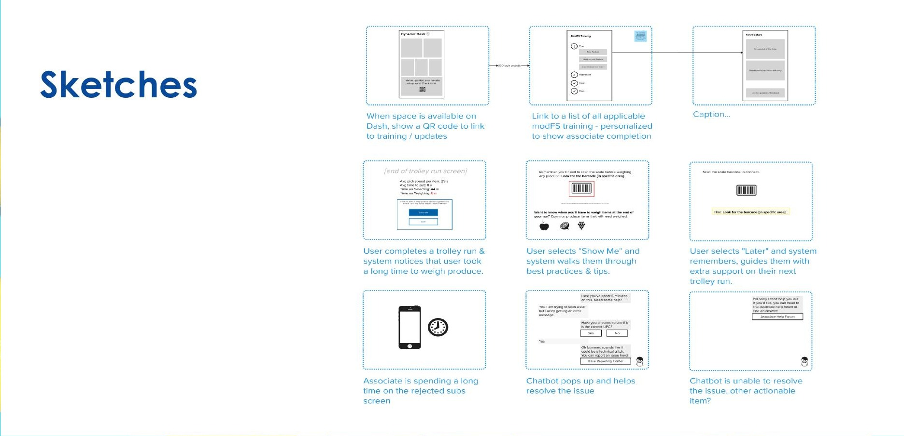
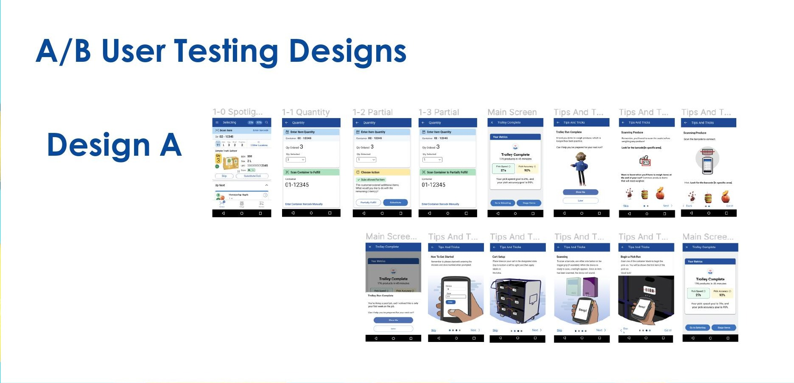
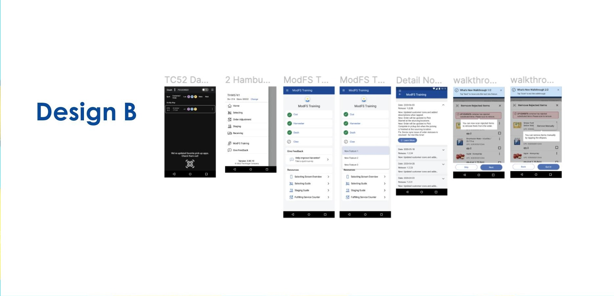

Associate Training & Onboarding for Modernized Fulfillment Suite
The Kroger Co. — 2023
Role
UI/UX Intern
Timeline
Fall 2023 (Sept - Dec)
Methods
Interviews, Surveys, Ideation, Figma prototyping, A/B testing
The Challenge
Modernized Fulfillment Suite (ModFS) is the set of in-app tools Kroger associates use to pick, pack, and fulfill customer orders. New features and process updates rolled out often, but associates had no reliable way to learn about them.
Current Challenges
- • Associates weren't aware of new ModFS features or process changes
- • Update communication methods were rarely referenced after the fact
- • No single place to find information about ModFS applications
Research Question
- • How can we improve the ModFS onboarding and training process for associates?
What We Learned
2 hrs
Max Time Spent Learning Updates
Associates spend no more than two hours on new feature or process information
Word of mouth
Primary Learning Channel
Most associates learn through managers, leads, or informal conversation, not documentation
Associates strongly preferred receiving updates through managers and leads, and learned best through hands-on practice and repetition. Email was seen as effective but easy to lose track of. Automating parts of the communication process came up repeatedly as a way to close the gap.
Current Communication Flow
Harvester team creates an in-app update → shares it with Retail Ops → Retail Ops shares it with managers, supervisors, and leads → those leads relay it to associates at shift start → associates spend about two hours or less learning it during their shift → associates rely on managers or peers for continued assistance → associates implement the learnings.
Ideation
I ran the team through Crazy 8s, a creative matrix, and storyboarding to generate a wide range of concepts before narrowing in, from proactive nudges when an associate is stuck, to a personalized training hub, to a chatbot that steps in when someone's spending too long on a task.

A/B User Testing Designs
I built out two full, competing prototypes in Figma and put them in front of associates and stakeholders as structured A/B tests, comparing different approaches to onboarding, in-the-moment guidance, and where training content should live.
Design A — In-flow quantity entry and post-run tips

Design B — Dedicated training hub and update walkthroughs

Potential Impact
I closed out the internship by deploying a supporting survey, synthesizing findings across the user testing and survey data, and handing off recommendations to the team. The designs were framed around impact the team could pursue going forward.
Framed Outcomes
- • Increase in associate productivity
- • Reduction in errors in fulfillment and pick-up orders
- • Increase in employee retention in the fulfillment and pickup department
- • Increased independence in associate training efforts